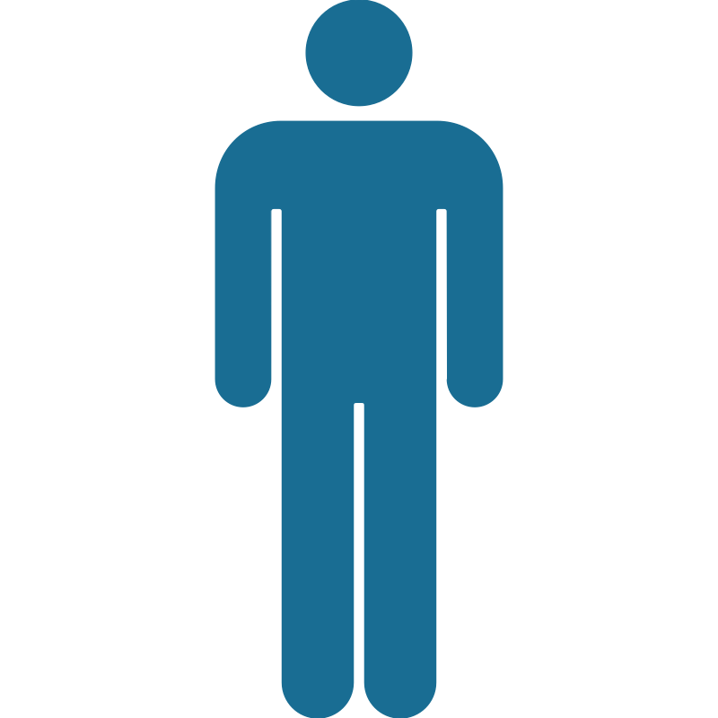
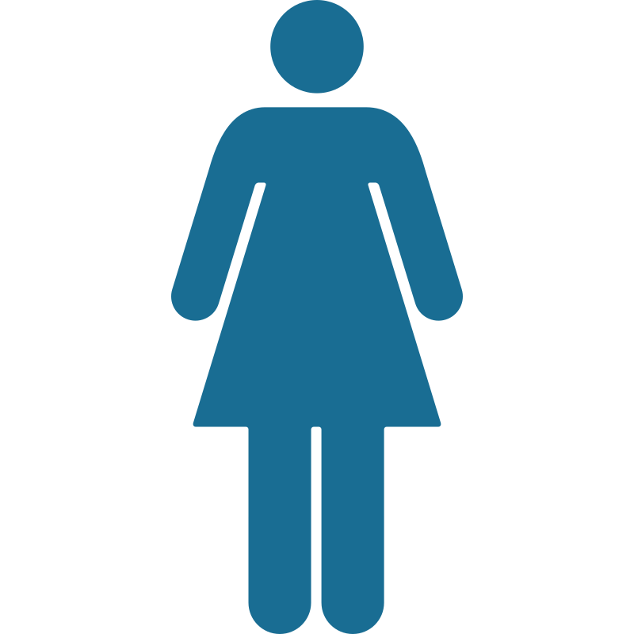
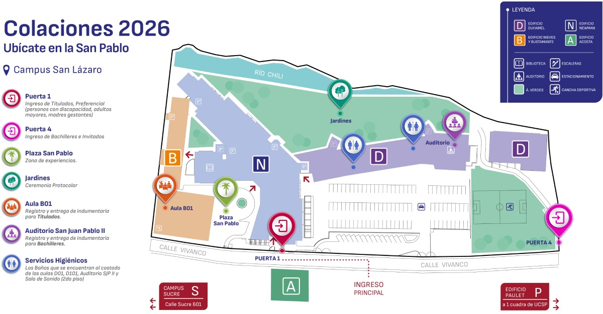

La Universidad Católica San Pablo felicita a sus antiguos alumnos bachilleres y titulados por culminar una etapa clave de su formación integral. Que este logro sea el inicio de una vida profesional vivida con sentido, responsabilidad y compromiso con el bien común.
Es indispensable completar tu registro mediante el enlace incluido en la invitación antes de la fecha límite.

Traje de color oscuro, camisa de vestir, corbata y calzado cerrado de vestir.
Vestido de cóctel (no de gala), blusa de vestir con falda a la rodilla, traje de sastre, pantalones de corte clásico o palazzo, acompañado de calzado cerrado de vestir.


Informes